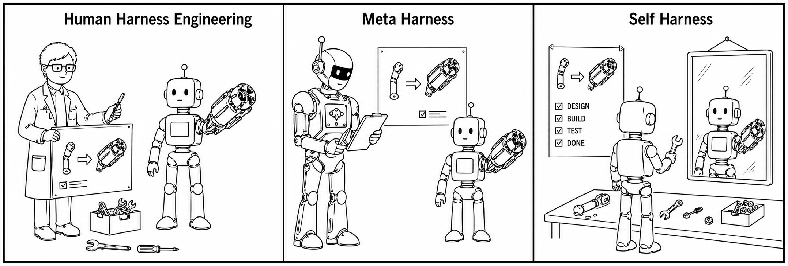

Section 2 deeper explanation
Introduction
The introduction sets up the paper’s core technical claim: an LLM agent is not determined only by the base model, but by the harness around it, meaning the prompts, tools, runtime logic, verification, and recovery rules that shape how the model behaves in practice. This matters because two agents built on the same model can perform very differently if their harnesses differ. The section argues that manual harness engineering, while effective for early systems like ReAct and current products such as Claude Code, Codex, and OpenHands, does not scale well once model behavior changes rapidly across releases. Different models have different strengths, error patterns, and tool-use habits, so a harness tuned for one model may become a poor fit for another. This is the motivation for the paper’s broader question, introduced in the abstract and developed in the “From prompts to agent harnesses” framing: can the agent improve the harness it depends on, instead of relying on a human or a stronger external agent?
Self-Harness is the answer proposed here. The central idea is to internalize harness improvement inside the target agent itself, so the same model that will use the harness also helps refine it. That is a notable design choice: compared with approaches that use an external “teacher” agent to rewrite the harness, Self-Harness avoids dependence on a more capable helper that may be unavailable, expensive, or misaligned with the target model’s specific failures. The paper frames this as an iterative self-improvement loop, which is the bridge to the later section on “Self-Harness: An Iterative Loop for Model-Specific Harness Improvement.” The intuition is that the best harness edits are often not generic advice, but targeted responses to recurring behavioral weaknesses of a particular model.
The loop has three stages. First, Weakness Mining runs the model under the current harness on tasks and collects execution traces with known outcomes. Failed traces are clustered so the agent can reason about failure modes at the pattern level instead of reacting to isolated mistakes. Second, Harness Proposal turns those patterns into a small set of minimal edits, each tied to a specific failure mechanism. The minimality constraint is important because it prevents the model from proposing broad, vague prompt expansions that might help accidentally but are hard to attribute or validate. Third, Proposal Validation uses regression tests to check that an edit improves performance without hurting held-out tasks; only then is it promoted into the next harness version. This is essentially a controlled optimization loop over harness design, where candidate changes are filtered by generalization rather than raw improvement on the observed failures.
The reported benchmark results illustrate why this matters. On Terminal-Bench-2.0, Self-Harness improves three diverse models substantially, including both held-in and held-out gains, which suggests the method is not merely overfitting to the observed traces. The qualitative examples reinforce the main technical message: the learned edits are model-specific and operational, such as reducing tool-use loops, checking dependencies earlier, preserving environment state, or encouraging faster movement from exploration to implementation. In other words, the paper is not claiming that “better prompts” are enough; it shows that a self-updating harness can encode recurring execution knowledge into the agent’s control structure, turning model-specific weakness into a reusable improvement mechanism.
